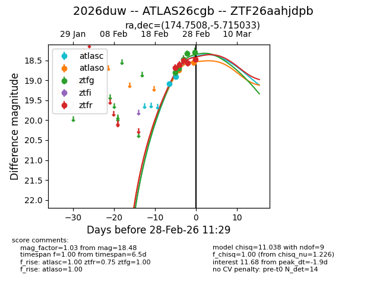
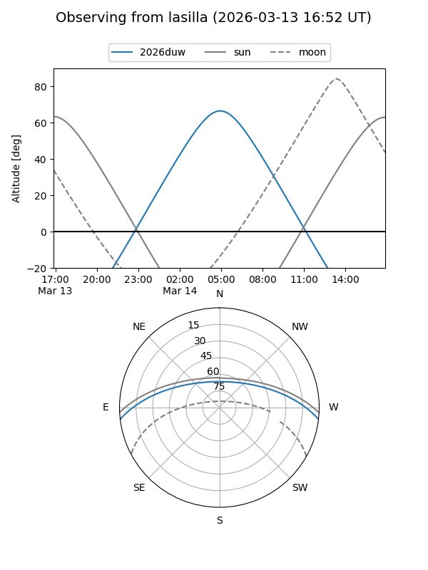
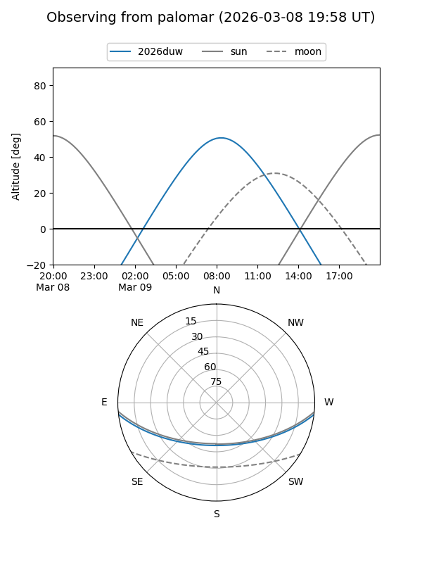
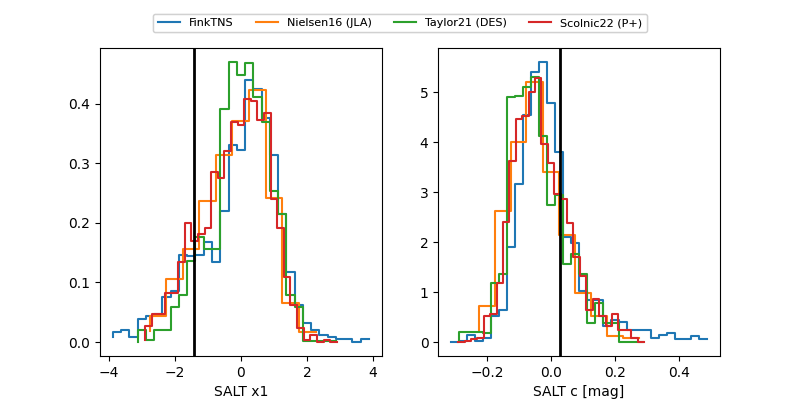

2026duw
Target 2026duw at 2026-02-28 11:31
Aliases and brokers:
FINK: link
Lasair: link
ALeRCE: link
TNS: link
YSE: link
alt names
ZTF26aahjdpb (ztf,fink_ztf)
2026duw (tns,yse)
ATLAS26cgb (atlas)
Coordinates:
equatorial (ra, dec) = 174.7508,-5.71503
equatorial (HMS+DMS) = 11:39:00.20,-05:42:54.12
galactic (l, b) = (272.1831,+52.77765)
Flags:
Photometry:
last atlasc=18.90, atlaso=18.54, ztfg=18.30, ztfr=18.48
2 atlasc, 2 atlaso, 5 ztfg, 5 ztfr detections
Lightcurve

Visibility


Additional plots
